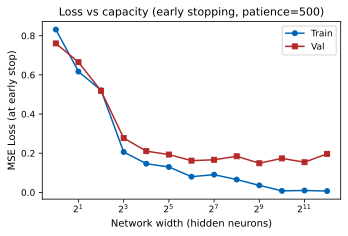

Softmax regression on learned features
We have seen count-based Markov models for predicting the next word hit the complexity wall quickly.
A language model instead computes a feature vector $\bphi(w_{1:t-1})$ based on previous words $w_{1:t-1}$ using a neural network and at the end uses softmax regression on it to produce the distribution of the next word $w_t$.
Answering it needs:
- 1functions that build their own features;
- 2a way to compute gradients through them;
- 3training that generalizes.
Every piece uses tools from earlier chapters: maximum likelihood, the chain rule, the variance of a sum, priors.
Feature engineering
A simple model can only use the representation it is given. Feature engineering chooses features $\bphi(\bx)$ by hand so that it works.
Example: one-second waves $\bx\in\bbR^{64}$ at 2 cycles per second (class 0) or 3 (class 1), random phase, noise standard deviation 0.7; 200 training waves per class.
Logistic regression on two raw samples, $(x_{17},x_{30})$: 53.5% right on its training waves, 48.2% on 2,000 new ones.
The same model on $\bphi(\bx)=(|X_2|,|X_3|)$, the Fourier amplitudes at 2 and 3 cycles per second: 100% on training and new waves. Its line lies close to $|X_3|=|X_2|$.
Even all 64 raw samples give only 66% on training and 52% on new waves: a wave and its negative are equally likely, so both classes average to zero.
With the samples $x_k$ at times $t_k=k/64$, $k=0,\dots,63$, the amplitude at $f$ cycles per second is
\[\htmlClass{dk1}{|X_f|=\frac{2}{64}\,\Big|\sum_{k=0}^{63}x_k\,e^{-2\pi i f t_k}\Big|},\]which is about 1 for a wave of frequency $f$ and amplitude 1, whatever its phase, and near 0 for a wave of the other frequency (the noise adds a little).
A wave $\sin(2\pi ft+\varphi)$ with $\varphi$ uniform on $[0,2\pi)$ has mean $\E[\sin(2\pi ft+\varphi)]=0$ at every $t$, in both classes. A linear score $\bw^T\bx+b$ then has the same mean in both classes; only its spread can differ, and a single threshold on it barely uses that.
Hand-designed features, and learned ones
Above the axis, hand-designed features; below it, learned ones (to scale). Fields: speech, images, text; no icon: a general method.
Data: ImageNet (2009); its challenge set has 1.2 million labelled images in 1000 classes.
Compute: GPUs (2009, Raina et al.); AlexNet (2012), “between five and six days to train on two GTX 580 3GB GPUs”.
Training methods: ReLU (2010), dropout (2012).
Two challenges: XOR
| $x_1$ | $x_2$ | $\mathrm{XOR}(x_1,x_2)$ |
|---|---|---|
| 0 | 0 | 0 |
| 0 | 1 | 1 |
| 1 | 0 | 1 |
| 1 | 1 | 0 |
Find $w_1,w_2,b$ with $f(x_1,x_2)=w_1x_1+w_2x_2+b=\mathrm{XOR}(x_1,x_2)$ at all four points.
So $w_1=w_2=1$, $b=0$, and then $f(1,1)=2\ne0$.
Two challenges: the ellipse
Class 1 inside the ellipse $x_1^2+x_1x_2+x_2^2<3$ (13 points), class 0 outside (12 points).
A linear threshold classifier predicts class 1 where
\[w_1x_1+w_2x_2+b>0,\]one side of a line. Here $(w_1,w_2)=(\cos\theta,\sin\theta)$.
However the line is turned and shifted, the count never reaches 0.
Transform the features: XOR
Compute new features first, then combine them linearly:
\[h_1=x_1+x_2,\qquad h_2=x_1x_2,\qquad \hat y=h_1-2h_2.\]| $x_1$ | $x_2$ | $h_1$ | $h_2$ | $\hat y$ |
|---|---|---|---|---|
| 0 | 0 | 0 | 0 | 0 |
| 0 | 1 | 1 | 0 | 1 |
| 1 | 0 | 1 | 0 | 1 |
| 1 | 1 | 2 | 1 | 0 |
$\hat y=\mathrm{XOR}(x_1,x_2)$ at every point.
In the $(h_1,h_2)$ plane $\hat y$ is linear: class 0 lies on its level line $\hat y=0$, class 1 on $\hat y=1$.
Transform the features: the ellipse
Three features of degree two:
\[\bh=(h_1,h_2,h_3)=(x_1^2,\ x_1x_2,\ x_2^2).\]The boundary $x_1^2+x_1x_2+x_2^2=3$ becomes the plane
\[h_1+h_2+h_3=3,\]linear in $\bh$: as in 32-3, quadratic features turn QDA's curved boundary into a linear one in a higher dimension.
Seen along the plane, the classes lie on its two sides. The hidden layer, 3 features for 2 inputs, is wider than the input.
Learning the transformation: linear layers
We saw hand-designed features enabled classification. Can we make this automatic instead?
Idea: Add a layer that learns the features, then combine them via another. The simplest choice is linear for both:
\[\bh=\bA\bx+\bc,\qquad\hat y=\bw^T\bh+d.\]Substituting,
\[\hat y=\bw^T(\bA\bx+\bc)+d=(\bw^T\bA)\bx+(\bw^T\bc+d),\]a linear function of $\bx$, for any number of hidden units.
Any number of layers: $\bW_3(\bW_2(\bW_1\bx))=(\bW_3\bW_2\bW_1)\bx$, one matrix.
The fix: an activation function
A neuron applies a nonlinear activation $g$ to its weighted sum:
\[z=\bw^T\bx+b,\qquad a=g(z).\]With $g$ between the layers, $\hat y=\bw^Tg(\bA\bx+\bc)+d$ no longer collapses. ReLU is a hinge: zero, then a straight line.
Practice: $\bx=(2,-1)$, $\bw=(3,2)$, $b=-4$. Find $z$, $\relu(z)$ and $\sigma(z)$.
$z=6-2-4=0$, so $\relu(z)=0$ and $\sigma(z)=0.5$.
ReLU solves XOR
Two ReLU units and a linear output:
\[\begin{aligned}h_1&=\relu(2x_1+2x_2-1),\\ h_2&=\relu(2x_1+2x_2-3),\\ \hat y&=h_1-3h_2.\end{aligned}\]| $x_1$ | $x_2$ | $h_1$ | $h_2$ | $\hat y$ |
|---|---|---|---|---|
| 0 | 0 | 0 | 0 | 0 |
| 0 | 1 | 1 | 0 | 1 |
| 1 | 0 | 1 | 0 | 1 |
| 1 | 1 | 3 | 1 | 0 |
The multilayer perceptron
The superscript $(l)$ labels the layer; it is not a power. Layers are counted without the input: the network on the right has 3.
Layer $l$ has $n_{\text{out}}(n_{\text{in}}+1)$ parameters, a weight per connection and an offset per unit. A 3-4-2 network has $4\cdot4+2\cdot5=26$.
Your turn: count the parameters
A fully connected network maps 5 inputs through two hidden layers of 10 units each to 3 outputs: 5-10-10-3.
- (a) How many parameters does each layer have?
- (b) How many does the network have?
Your turn: count the parameters
The 5-10-10-3 network. (a) Parameters per layer. (b) The total.
(a) Layer 1: $10\cdot(5+1)=60$.
Layer 2: $10\cdot(10+1)=110$.
Layer 3: $3\cdot(10+1)=33$.
(b) $60+110+33=203$ parameters.
The forward pass
Bipolar XOR, targets $\pm1$; ReLU units, linear output:
\[\bW=\begin{pmatrix}2&2\\2&2\end{pmatrix},\ \bb=\begin{pmatrix}-1\\-3\end{pmatrix},\ \bw=\begin{pmatrix}2\\-6\end{pmatrix},\ d=-1.\]Input $\bx=(0,1)$, target $+1$.
1. $\bz=\bW\bx+\bb=(2-1,\ 2-3)=(1,-1)$.
2. $\bh=\relu(\bz)=(1,0)$: the second unit is off.
3. $\hat y=\bw^T\bh+d=2-1=1$, the target.
Your turn: trace the input (1, 1)
The network of slide 17, with input $\bx=(1,1)$ and target $-1$.
- (a) The pre-activations $\bz$.
- (b) The hidden values $\bh$.
- (c) The output $\hat y$. Does it match the target?
Your turn: trace the input (1, 1)
Input $\bx=(1,1)$, target $-1$. (a) $\bz$. (b) $\bh$. (c) $\hat y$.
(a) $\bz=(2+2-1,\ 2+2-3)=(3,1)$.
(b) $\bh=\relu(\bz)=(3,1)$: both units are on.
(c) $\hat y=2\cdot3-6\cdot1-1=-1$, the target.
What each unit adds over the unit square: teal positive, brown negative; the black line is $\hat y=0$.
Many hinges make any curve
Let's see how ReLU can produce non-linearity in 1D.
Each ReLU unit adds a hinge:
\[\hat y(x)=d+\sum_{j=1}^k v_j\,\relu\big(x-t_j\big).\]With the hinges fixed at $t_j=\frac{j-1}k$, least squares fits $d$ and the $v_j$ to a smooth bump.
More units, more hinges, a closer fit:
Output layers, distributions and losses
The hidden layers build the features; the output layer and the loss decide what the network predicts and how it is scored.
The output layer computes the parameters of a distribution for $y$ given $\bx$; the loss is that distribution's negative log-likelihood, so training is maximum likelihood.
| task | output layer | distribution of $y\mid\bx$ | loss: its negative log-likelihood |
|---|---|---|---|
| regression | identity, $\hat y=z$ | $\cN(\hat y,\sigma^2)$ (Ch. 5) | squared error $(y-\hat y)^2$, up to scale and a constant |
| two classes | sigmoid, $p=\sigma(z)$ | $\ber(p)$ (32-3) | cross-entropy |
| $K$ classes | softmax, $\bp=\mathrm{softmax}(\bz)$ | categorical$(\bp)$ (32-3) | cross-entropy |
Here $z$ (or $\bz$) is the output layer's linear function of the last hidden layer $\bh^{(L)}$.
The ellipse with 2, 3 and 4 hidden units
Non-linear neurons work for our ellipse example as they did for XOR.
500 points uniform on $[-3,3]^2$, labelled by the ellipse; one hidden layer of ReLU units, sigmoid output, cross-entropy loss. Two units give a wedge; three and four close it into a polygon around the ellipse.
With 20% of the labels flipped at random, the best possible accuracy on new data is 80%: the irreducible error of Ch. 5. The network reaches 79% on its training data.
The problem: the weights are buried
To fit these networks by maximum likelihood, gradient descent needs the derivative of the loss with respect to every weight, including those buried in early layers.
A 2-2-1 ReLU network, one example $\bx=(1,2)$, $y=1$, and the squared loss $\cL=(\hat y-y)^2$:
\[\begin{aligned}z_i&=w_{i1}x_1+w_{i2}x_2+b_i,\quad h_i=\relu(z_i),\\ \hat y&=v_1h_1+v_2h_2+d.\end{aligned}\]Here that is $\partial\cL/\partial\theta$ for nine parameters. A first-layer weight acts on $\cL$ only through $z_i$, $h_i$ and $\hat y$.
| $w_{11}$ | $w_{12}$ | $w_{21}$ | $w_{22}$ | $b_1$ | $b_2$ | $v_1$ | $v_2$ | $d$ |
|---|---|---|---|---|---|---|---|---|
| 2 | 1 | 1 | −1 | −1 | 0 | 1 | 2 | 0 |
Building blocks 1 to 3
A network is built from a few simple operations, and each passes partial derivatives back by its own rule.
Building blocks 4 to 6
Three more blocks, the nonlinear ones, complete the set a network needs.
Backpropagation in the full network
The blocks and the two rules are all that the 2-2-1 network of slide 25 needs; here it is as a computation graph, with $\bx=(1,2)$, $y=1$, $\cL=(\hat y-y)^2$.
The same computation in matrix form
For a whole layer at once, the same messages take a compact matrix form.
With $\bz^{(l)}=\bW^{(l)}\bh^{(l-1)}+\bb^{(l)}$ and $\bh^{(l)}=g(\bz^{(l)})$, let $\bdelta^{(l)}=\partial\cL/\partial\bz^{(l)}$, the messages at layer $l$'s pre-activations. Then
\[\begin{aligned}\htmlClass{dk1}{\bdelta^{(l)}}&\htmlClass{dk1}{{}=\big(\bW^{(l+1)T}\bdelta^{(l+1)}\big)\odot g'(\bz^{(l)})},\\ \htmlClass{dk2}{\nabla_{\bW^{(l)}}\cL}&\htmlClass{dk2}{{}=\bdelta^{(l)}\,\bh^{(l-1)T}},\qquad \nabla_{\bb^{(l)}}\cL=\bdelta^{(l)},\end{aligned}\]where $\odot$ multiplies two vectors entry by entry, $(\mathbf a\odot\mathbf b)_j=a_jb_j$.
Error times input at every layer, as for logistic regression (32-3, slide 29). A softmax output with the cross-entropy has the output error $\htmlClass{dk3}{\bdelta^{(L)}=\bp-\be_y}$.
Unit $i$ of layer $l$ feeds every unit $j$ of layer $l+1$ through $z^{(l+1)}_j=\sum_iW^{(l+1)}_{ji}h^{(l)}_i+b^{(l+1)}_j$. By the chain rule its value receives the sum of their messages,
\[\htmlClass{dk1}{\frac{\partial\cL}{\partial h^{(l)}_i}=\sum_j\delta^{(l+1)}_jW^{(l+1)}_{ji}=\big(\bW^{(l+1)T}\bdelta^{(l+1)}\big)_i,}\]and the activation scales it by its slope: $\delta^{(l)}_i=\frac{\partial\cL}{\partial h^{(l)}_i}\,g'(z^{(l)}_i)$. For ReLU, $g'$ is 1 for a unit that is on and 0 for one that is off.
$W^{(l)}_{ij}$ enters only $z^{(l)}_i$, with coefficient $h^{(l-1)}_j$, so $\partial\cL/\partial W^{(l)}_{ij}=\delta^{(l)}_ih^{(l-1)}_j$, the entries of $\bdelta^{(l)}\bh^{(l-1)T}$; $b^{(l)}_i$ enters with coefficient 1.
For the softmax with the cross-entropy, $-\ln p_y=-z_y+\ln\sum_ke^{z_k}$, so $\partial(-\ln p_y)/\partial z_k=p_k-\mathbb 1[k=y]$ (32-3, slide 37).
Minibatches
Real data sets have many examples, and the loss and its gradient average over them: $\cL=\frac1n\sum_{i=1}^n\cL_i$, $\nabla\cL=\frac1n\sum_{i=1}^n\nabla\cL_i$.
A second data point (example), $\bx=(2,-1)$, $y=6$: $\bz=(2,3)$, $\bh=(2,3)$, $\hat y=8$, $\cL_2=4$.
| $w_{11}$ | $w_{12}$ | $w_{21}$ | $w_{22}$ | $b_1$ | $b_2$ | $v_1$ | $v_2$ | $d$ | |
|---|---|---|---|---|---|---|---|---|---|
| $\nabla\cL_1$, example 1 | 4 | 8 | 0 | 0 | 4 | 0 | 12 | 0 | 4 |
| $\nabla\cL_2$, example 2 | 8 | −4 | 16 | −8 | 4 | 8 | 8 | 12 | 4 |
| average | 6 | 2 | 8 | −4 | 4 | 4 | 10 | 6 | 4 |
The examples disagree on $w_{12}$: example 1 says lower it ($+8$), example 2 says raise it ($-4$). The step follows their average.
The training loop
Repeating the forward pass, backward pass and update over the data, batch by batch, is the training loop.
Batch: the $B$ examples used for one update. Iteration: one update. Epoch: one pass through all $n$ training examples, $n/B$ iterations.
For each epoch: shuffle the data and split it into batches of $B$;
for each batch: forward pass, loss, backward pass (the batch's average gradient), update $\btheta\leftarrow\btheta-\eta\nabla\cL_{\text{batch}}$.
Stop when the validation loss stops improving.
Your turn: training terminology
A data set of 6,000 images is trained with batch size $B=200$ for 5 epochs.
- (a) How many iterations are in one epoch?
- (b) How many iterations does the training run take?
Your turn: training terminology
6,000 images, $B=200$, 5 epochs. (a) Iterations per epoch. (b) Iterations in all.
(a) $6{,}000/200=30$ iterations per epoch.
(b) $30\times5=150$ iterations. Each image is used once per epoch, 5 times in all.
The minibatch gradient is an estimator
A minibatch gradient is computed from a random sample of examples, so Chapter 2's questions apply: is it unbiased, and how variable is it?
Draw $B$ examples uniformly, with replacement: $\hat\bg_B=\frac1B\sum_{b=1}^B\nabla\cL_{i_b}$.
\[\htmlClass{dk1}{\E[\hat\bg_B]=\nabla\cL},\qquad \htmlClass{dk2}{\Var(\hat g_{B,k})=\frac{\sigma_k^2}{B}},\]with $\sigma_k^2$ the variance of coordinate $k$ over the examples: unbiased, with the variance of a mean (Ch. 2) of independent draws (Ch. 4).
$B=4$ halves the standard deviation,
and $B=16$ cuts it to 1/4. Stochastic gradient descent in 32-3 used $B=1$.
$\partial\cL/\partial d$ for the 2-2-1 network on 100 synthetic examples; 50 minibatches per row; shaded: the full gradient $\pm\sigma/\sqrt B$.
Each index $i_b$ is uniform on $\{1,\dots,n\}$, so $\E[\nabla\cL_{i_b}]=\frac1n\sum_i\nabla\cL_i=\nabla\cL$, and the average of $B$ such terms has the same mean.
Draws with replacement are independent, so the variance of their sum is the sum of their variances (Ch. 4): $\Var\big(\sum_b\nabla_k\cL_{i_b}\big)=B\sigma_k^2$, where $\sigma_k^2=\frac1n\sum_i\big(\nabla_k\cL_i-\nabla_k\cL\big)^2$. Dividing the sum by $B$ divides the variance by $B^2$.
Initialization
Gradient descent needs a starting point, and the scale of the starting weights decides whether signals survive many layers.
Symmetry: units with equal weights compute equal values and receive equal gradients, so every update keeps them equal. Weights start random.
With independent weights of mean 0 and variance $\sigma^2$, independent of $\bh$ (Ch. 4, the variance of a sum):
\[\htmlClass{dk1}{\Var(z_j)=\Var\Big(\sum_{i=1}^nW_{ji}h_i\Big)=n\sigma^2\,\E[h_i^2]}.\]A linear layer keeps the scale with $\sigma^2=1/n$. ReLU halves $\E[h^2]$, so ReLU layers need $\sigma^2=2/n$.
Each term $W_{ji}h_i$ has mean 0 (the weight has mean 0 and is independent of $h_i$), so $\Var(W_{ji}h_i)=\E[W_{ji}^2]\,\E[h_i^2]=\sigma^2\E[h_i^2]$. The terms are uncorrelated, so their variances add: $n\sigma^2\E[h_i^2]$.
If $z$ is symmetric about 0, $\relu(z)^2$ equals $z^2$ on half of the outcomes and 0 on the other half, so $\E[\relu(z)^2]=\frac12\E[z^2]=\frac12\Var(z)$. Then $\Var(z^{(l+1)})=n\sigma^2\cdot\frac12\Var(z^{(l)})$, constant from layer to layer when $n\sigma^2=2$.
The figure: the plan's simulation, an input of 1,000 standard normal vectors in $\bbR^{100}$ and 10 ReLU layers of width 100 without offsets, one draw of the weights. Scaling every weight by $c$ scales layer $l$'s activations by $c^l$, so one draw gives every $n\sigma^2$.
Networks can memorize
A network trained this way can fit its training data too well: with enough parameters, exactly, noise included.
A regression on 8 noisy XOR points: training against validation loss for 2-2-1 (9 parameters) and 2-8-1 (33 parameters) networks.
The training loss keeps falling; the validation loss reaches a minimum, then rises.


Three fixes
Three standard tools keep a network from fitting the noise.
With the prior $\btheta\sim\cN(\bzero,\lambda^{-1}\bI)$, $\ln p(\btheta)=-\frac\lambda2\|\btheta\|^2+\text{const}$, so by Bayes' rule
\[\htmlClass{dk1}{-\ln p(\btheta\mid\cD)=\underbrace{-\ln p(\cD\mid\btheta)}_{\text{the loss}}+\frac\lambda2\|\btheta\|^2+\text{const},}\]and the minimizer of the penalized loss is the posterior mode, the MAP estimate (Ch. 3). For a linear model with Gaussian noise this is ridge regression (Ch. 5).
Double descent
Very large networks bring a surprise to the bias and variance picture of Chapter 5.
Test error falls, rises near the size that just fits the training data (the interpolation threshold), and falls again.
The same XOR regression with very wide hidden layers and early stopping (below right): validation error flattens, and never comes back up.

Calibration
Are a network's probabilities trustworthy? A classifier is calibrated if among its predictions made with confidence 0.8, about 80% are right, and so for every confidence.
Toy: 100 predictions at confidence 0.5, 45 right; 100 at 0.9, 60 right.
Expected calibration error, the gap averaged over the predictions:
\[\mathrm{ECE}=\tfrac{100}{200}\,|0.45-0.5|+\tfrac{100}{200}\,|0.6-0.9|=0.175.\]Maximum likelihood rewards calibration
Calibration follows from the loss the network is trained with.
If the label has distribution $p$ and the model predicts $q$, the expected log loss is
\[\E_{Y\sim p}\Big[\ln\frac{1}{q(Y)}\Big]=H(p)+D(p\,\|\,q),\]smallest only at $q=p$ (32-3, slide 27). For $p=0.7$:
| $q$ | 0.5 | 0.7 | 0.9 |
|---|---|---|---|
| expected loss (nats) | 0.693 | 0.611 | 0.765 |
Pretrained language models are well calibrated; post-training changes that (lecture 5).
Summary
Every piece came from earlier chapters: maximum likelihood, the chain rule, the variance of a sum, priors. The fundamentals outlast the models.